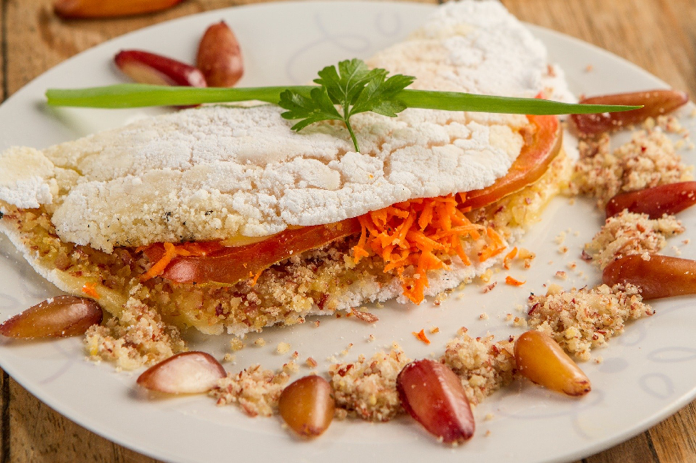
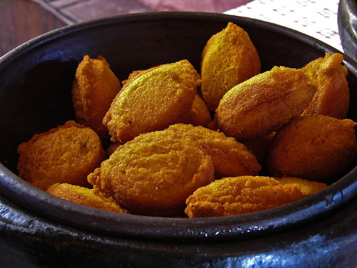
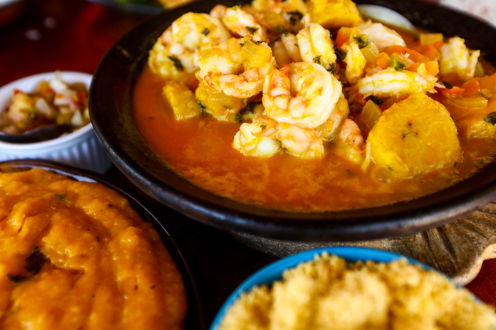
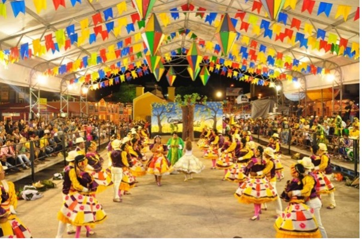
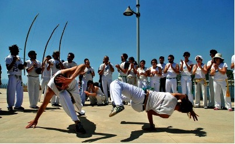
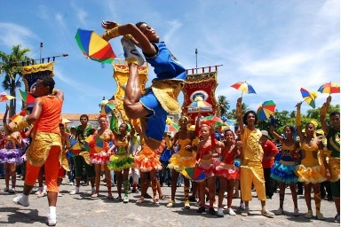
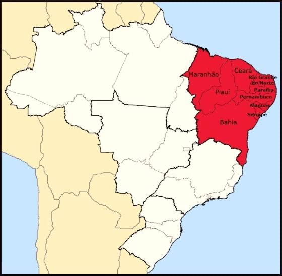
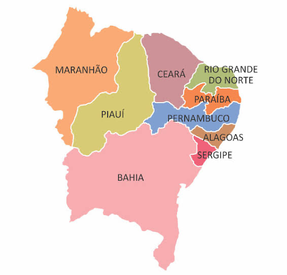

Comidas Típicas
Tapioca
Aracajé
Vatapá
Moqueca
Músicas Típicas
Forró
Piseiro
Cultura
Festa Junina
Os festejos juninos compreendem os dias de Santo Antônio, e exaltam a identidade da região. As celebrações são embaladas por forrós, quadrilhas, grupos de coco, tambor de crioula e batalhões de bumba-meu-boi.
Capoeira
A capoeira é caracterizada por golpes e movimentos ágeis e complexos, utilizando primariamente chutes e rasteiras, além de cabeçadas, joelhadas, cotoveladas, acrobacias em solo ou aéreas.
Frevo
É um tipo de dança frenético de ritmos bastante acelerados. Também possui alguns elementos da capoeira.
Cartografia
Nordeste brasileiro

